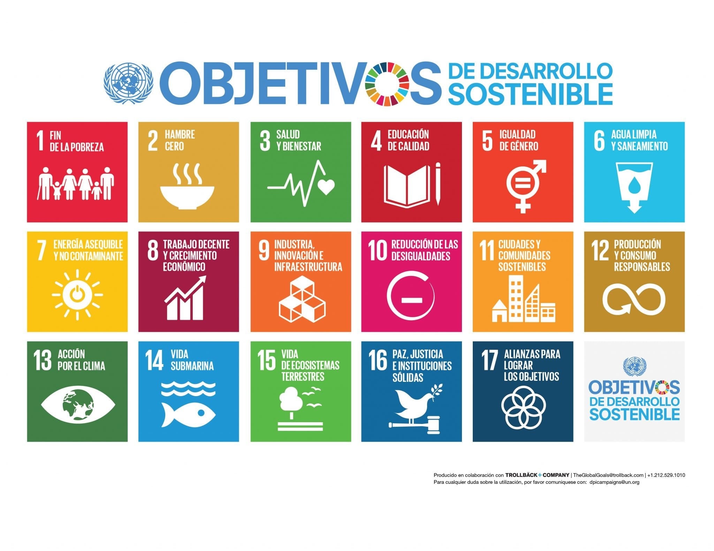
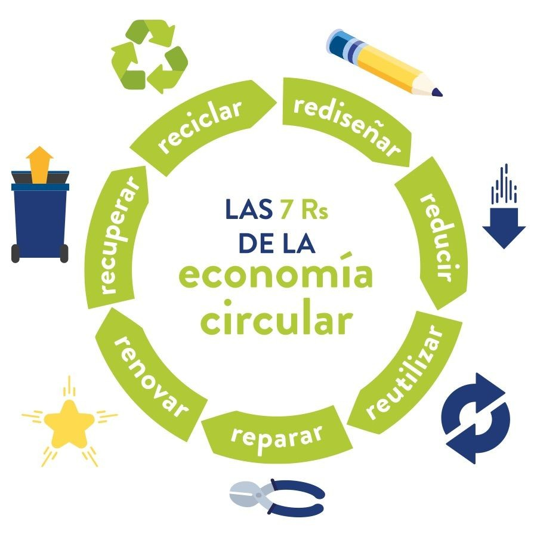

Una de nuestras justificaciones es la Agenda 2030, la cual consta de 17 Objetivos de Desarrollo Sostenible (ODS) que entraron en vigor el 1 de enero de 2016, con un plazo para cumplirse hasta 2030, buscando un planeta sostenible.

Nos centraremos en los objetivos 3, 6, 12 y 13, porque nuestro proyecto busca disminuir el mal desecho de los residuos electrónicos para evitar contaminar el agua (ODS 6), así como el suelo y el aire —los cuales generan enfermedades humanas como daños neurológicos y cognitivos, problemas respiratorios, aumento del riesgo de cáncer, etc. (ODS 3)— y afectaciones al ecosistema y la vida marina (por ingestión de contaminantes).
“La existencia de una institución se justifica sólo si los resultados de sus trabajos inciden en el mejoramiento de la calidad de vida de las personas.”
El TecNM promueve participar en la consolidación del desarrollo tecnológico y social de la comunidad, colaborando con los sectores público, privado y social —principios que respaldan este proyecto.
Por estos objetivos decidimos fomentar el reciclaje y la reutilización de componentes electrónicos para animar a la gente a evitar el mal desecho, fomentando mejoras en el medio ambiente, la salud, la creatividad y el interés científico a través de nuestra carrera universitaria.

Buscamos incentivar e implementar la economía circular en nuestro plantel (ITQ). Definición: “modelo de producción y consumo que implica compartir, alquilar, reutilizar, reparar, renovar y reciclar materiales y productos existentes todas las veces que sea posible para crear un valor añadido.”
Esto evita la economía lineal (extraer, fabricar, usar y desechar). Además, nos alejamos de la obsolescencia programada y buscamos productos más duraderos o darles otros usos; promovemos las 7 R’s (reducir, reutilizar, reparar, reciclar, recuperar, rediseñar y repensar).
Se busca generar solidaridad, confianza, espíritu de comunidad y participación social, fortaleciendo procesos de integración productiva, consumo, distribución y ahorro para satisfacer las necesidades de las comunidades.
Muchos lugares donde se recolectan o procesan aparatos electrónicos no cuentan con condiciones ni permisos adecuados, lo que provoca daños severos en la salud de los trabajadores con el paso del tiempo. Al fomentar centros de reciclaje certificados y reglamentados, se incentiva la inversión en mejores tecnologías y en la creación de empleos dignos, formales y con responsabilidades legales que velen por la integridad física, mental y financiera de los trabajadores.
Referencias (formato APA simplificado):
TecNM. (s. f.). TecNM | Tecnológico Nacional de México. Recuperado de https://coacalco.tecnm.mx/TECNM/sitio/valores.html
Martín, A. (2025, 11 de mayo). Agenda 2030 y ODS. https://ods.uam.es/agenda-2030-y-ods/
De La Economía Social, I. N. (s. f.). ¿A qué nos referimos cuando hablamos de Economía Social? gob.mx. https://www.gob.mx/inaes/articulos/a-que-nos-referimos-cuando-hablamos-de-economia-social?idiom=es
Universidades, S. (2025, 13 de agosto). Economía circular. Santander Open Academy. https://www.santanderopenacademy.com/es/blog/economia-circular.html
De Protección Al Salario, C. N. M. (s. f.). Derechos Laborales de los Trabajadores. gob.mx. https://www.gob.mx/conampros/acciones-y-programas/derechos-laborales-de-los-trabajadores